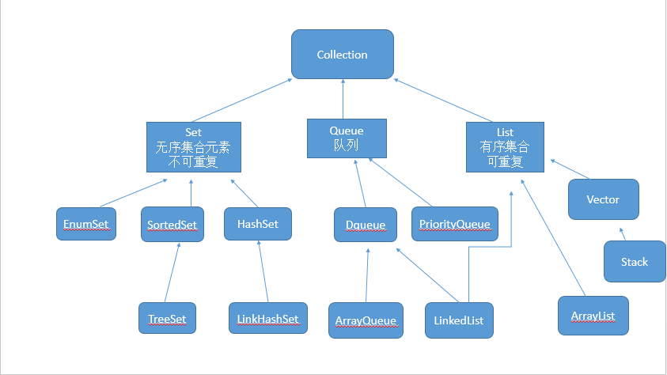

继承图

Map
概述
| Map类型 | 插入是否有序 | 顺序特点 |
|---|---|---|
| HashMap | 无序 | - |
| LinkedHashMap | 有序 | 记录插入顺序 |
| TreeMap | 有序 | 默认升序 |
结构
HashMap

- HashMap 是一个最常用的Map，它根据键的HashCode值存储数据，根据键可以直接获取它的值，具有很快的访问速度。HashMap最多只允许一条记录的键为Null。在JDK1.8中，链表⻓度⼤于8的时候，链表会转成红⿊树。
- DEFAULT_INITIAL_CAPACITY: Table数组的初始化长度 = 16。
- DEFAULT_LOAD_FACTOR: 负载因子默认值为 0.75。当
元素的总个数>当前数组的长度 * 负载因子时数组会扩容为原来的两倍。 - TREEIFY_THRESHOLD: 链表树化阙值默认值为 8 。表示在一个node（Table）节点下的值的个数大于8时候，会将链表转换成为红黑树。
- UNTREEIFY_THRESHOLD: 红黑树链化阙值：默认值为 6 。表示在进行扩容期间，单个Node节点下的红黑树节点的个数小于6时候，会将红黑树转化成为链表。
- MIN_TREEIFY_CAPACITY: 64 最小树化阈值，当Table所有元素超过该值时才会进行树化（为了防止前期阶段频繁扩容和树化过程冲突）。
- HashMap中存储的是泛型，因此不能是基础类型，可能会产生自动装箱的消耗，创建新的装箱对象。
为什么是2次幂的初始容量，为什么扩容也是2倍？
因为计算下标时采用的是 (n - 1) & hash 方式，位运算特别高效，按位与 & 的计算方法是，只有当对应位置的数据都为1时，运算结果也为1，当 HashMap 的容量是 2 的 n 次幂时，(n-1) 的 2 进制也就是 1111111***111 这样形式的，这样与添加元素的 hash 值进行位运算时，能够充分的散列，使得添加的元素均匀分布在 HashMap 的每个位置上，减少hash碰撞，避免形成链表的结构，使得查询效率降低！
为什么使用链表+数组？⽤ LinkedList/ArrayList 代替数组结构可以吗？
在对key值进行散列取到下标以后，放入到数组中时，难免出现两个key值不同，但是却放入到下标相同的格子中，此时我们就可以使用链表来对其进行链式的存放。数组的查找效率比 LinkedList 大，所以使用数组。另外 ArrayList 底层虽然也是数组，但它是 1.5 倍扩容机制。
put方法
- 对 key 做 hash 运算，计算 index；
- 如果没碰撞直接放到数组⾥；如果碰撞了则以链表的形式存在数组后；
- 如果碰撞导致链表过⻓(⼤于等于TREEIFY_THRESHOLD)，就把链表转换成红⿊树(JDK1.8中的改动)；
- 如果节点已经存在就替换 old value(保证key的唯⼀性)；
- 如果达到了扩容条件则扩容。
resise方法
HashMap 的扩容实现机制是将原 table 数组中所有的 Entry 取出来，重新对其 Hashcode 做 Hash 散列到扩容后新的 Table 中。
get方法
- 对 key 做 hash 运算，计算 index；
- 如果与数组⾥的第⼀个节点直接命中，则直接返回；
- 如果有冲突，则去查找对应的 Entry；若为树则为 O(logn)；若为链表则为 O(n)。
ArrayMap
ArrayMap是一个通用的key-value映射数据结构，它相比HashMap会占用更少的内存空间。
数据结构
在ArrayMap内部有两个比较重要的数组，一个是mHashes,另一个是mArray。
- mHashes用来存放key的hashcode值
- mArray用来存储key与value的值，它是一个Object数组。依旧存在自动装箱的消耗。
其中这两个数组的索引对应关系是：
1 | int[] mHashes; |
注：向左移一位的效率要比 乘以2倍 高一些。
查找数据
查找数据分成两步：
- 根据key的hashcode找到在mHashes数组中的索引值
- 根据上一步的索引值去查找key所对应的value值
mHashes是一个有序数组，查找元素的时候使用的是二分查找。
插入数据
- 新数据位置确定
- 根据key的hashcode在mHashes表中二分查找确定合适的位置。
- 如果新添加的数据的索引不是最后位置，在需要对这个索引之后的全部数据向后移动
- 当key为null时，其实和其他正常的key差不多，只是对应的hashcode会默认成0来处理。
- 数组扩容问题
- 首先数组的容量会扩充到BASE_SIZE
- 如果BASE_SIZE无法容纳，则扩大到2 * BASE_SIZE
- 如果2 * BASE_SIZE仍然无法容纳，则每次扩容为当前容量的1.5倍。
删除数据
- 如果当前ArrayMap只有一项数据，则删除操作将mHashes，mArray置为空数组，mSize置为0.
- 如果当前ArrayMap容量过大（大于BASE_SIZE*2）并且持有的数据量过小（不足1/3）则降低ArrayMap容量，减少内存占用
- 如果不符合上面的情况，则从mHashes删除对应的值，将mArray中对应的索引置为null
ArrayMap的缓存优化
在元素的新增和删除过程中，会频繁出现多个容量为BASE_SIZE和2 * BASE_SIZE的int数组和Object数组(put方法增加数据，扩大容量；remove方法删除数据，减小容量)。ArrayMap设计者为了避免创建不必要的对象，减少GC的压力，采用了类似对象池的优化设计。
SparseArray
1 | private int[] mKeys; |
SparseArray 比 HashMap 更省内存，某些条件下性能更好，因为它避免了对key的自动装箱。ArrayMap 与 SparseArray 最大的一点不同就是 ArrayMap 的 key 可以为任意的类型，而 SparseAraay 的 key 只能是整型。它也对 key 使用二分法进行排序。
ConcurrentHashMap
- 通过把整个Map分为N个Segment,可以提供相同的线程安全,但是效率提升N倍,默认提升16倍。(读操作不加锁,由于HashEntry的value变量是 volatile的,也能保证读取到最新的值。)
- 有些方法需要跨段,比如size()和containsValue(),它们可能需要锁定整个表而而不仅仅是某个段,这需要按顺序锁定所有段,操作完毕后,又按顺序释放所有段的锁
- 扩容:段内扩容(段内元素超过该段对应Entry数组长度的75%触发扩容,不会对整个Map进行扩容),插入前检测需不需要扩容,有效避免无效扩容
ConcurrentSkipListMap
- 它是一个有序的Map，相当于TreeMap。
- TreeMap采用红黑树实现排序，而ConcurrentHashMap采用跳表实现有序。
HashTable
HashTable与 HashMap类似，它继承自Dictionary类，不同的是：
- 它不允许记录的键或者值为空。
- 它支持线程的同步，实现线程安全的方式是在修改数据时锁住整个HashTable，因此也导致了 HashTable在写入时会比较慢。
- 初始size为11,扩容:newsize = olesize*2+1
LinkedHashMap
LinkedHashMap 直接继承自 HashMap, 内部维护了一个 LinkedList 双向链表。LinkedHashMap 保存了记录的插入顺序，在用 Iterator 遍历 LinkedHashMap 时，先得到的记录是先插入的，它还可以在此基础上再根据访问顺序(get,put)来排序，可以用来实现 Lru 算法。
在遍历的时候会比HashMap慢，不过有种情况例外，当HashMap容量很大，实际数据较少时，遍历起来可能会比LinkedHashMap慢，因为LinkedHashMap的遍历速度只和实际数据有关，和容量无关，而HashMap的遍历速度和容量有关。
初始化
1 | public class LinkedHashMap<K,V> extends HashMap<K,V> implements Map<K,V> { |
LinkedHashMapEntry
1 | static class LinkedHashMapEntry<K,V> extends HashMap.Node<K,V> { |
LinkedHashMap 的 Entry 新增了 before 和 after 两个指针，before 在每次添加元素的时候将会指向上一次添加的元素，而上一次添加的元素的 after 指针将指向本次添加的元素，来形成双向链表。
put元素
LinkedHashMap 没有重写 put 方法，只是重写了 newNode 方法生成新的节点。
1 | Node<K,V> newNode(int hash, K key, V value, Node<K,V> e) { |
remove元素
LinkedHashMap 没有重写 remove 方法，只是重写了 afterNodeRemoval 方法处理删除的节点。
1 | // 从双向链表中删除节点 e |
维护节点访问顺序
accessOrder 参数默认为 false, 当设置为 true 时, LinkedHashMap 会维护节点访问顺序。在 putVal/get/repalce 方法最后都调用了 afterNodeAccess 方法，LinkedHashMap 重写了这个方法：
1 | // 将被访问节点移动到链表最后 |
迭代器
LinkedHashMap 实现了自己的迭代器，其迭代是通过双向链表实现的。
1 | abstract class LinkedHashIterator { |
其 containsValue 方法也是通过遍历双向链表实现的：
1 | public boolean containsValue(Object value) { |
TreeMap
- TreeMap实现SortMap接口，内部是红黑树，能够把它保存的记录根据键排序，默认是按键值的升序排序，也可以指定排序的比较器，当用 Iterator 遍历TreeMap时，得到的记录是排过序的。
比较
- 一般情况下，我们用的最多的是HashMap，HashMap里面存入的键值对在取出的时候是随机的，它根据键的HashCode值存储数据，根据键可以直接获取它的值，具有很快的访问速度。在Map中插入、删除和定位元素，HashMap 是最好的选择。
- TreeMap取出来的是排序后的键值对。但如果要按自然顺序或自定义顺序遍历键，那么TreeMap会更好。
- LinkedHashMap是HashMap的一个子类，如果需要输出的顺序和输入的相同，那么用LinkedHashMap可以实现，它还可以按读取顺序来排列，像连接池中可以应用。
- HashMap : 内存占用较大，增、删的效率较高，改、查的效率一般
- ThreadLocal.Values : 内存占用一般，当数据量比较小时，增删改查的效率高；数据量大时，增删改查效率一般
- ArrayMap: 内存占用较小，改、查的效率高，增、删的效率较低
- SparseArray : 内存占用较小，改、查的效率高，增、删的效率低，且主键是数字
List
- 有序，可重复。
Vector
- 底层维护一个Object数组。
- 查询速度快，增删慢。
- 线程安全，操作效率低。
ArrayList
- 底层维护一个Object数组。
- 查询速度快，增删慢。
- 1.5 倍扩容。
LinkedList
LinkedList是List接口的实现类，因此它可以是一个集合，可以根据索引来随机访问集合中的元素。此外，它还是Duque接口的实现类，因此也可以作为一个双端队列，或者栈来使用。
- LinkedList是一个双向链表.
- 查询速度慢，增删快
CopyOnWriteArrayList
CopyOnWriteArrayList使用了一种叫写时复制的方法，当有新元素添加到CopyOnWriteArrayList时，先从原有的数组中拷贝一份出来，然后在新的数组做写操作，写完之后，再将原来的数组引用指向到新数组。
CopyOnWriteArrayList的整个add操作都是在锁的保护下进行的。
1 | public boolean add(E e) { |
由于所有的写操作都是在新数组进行的，这个时候如果有线程并发的写，则通过锁来控制，如果有线程并发的读，则分几种情况：
- 如果写操作未完成，那么直接读取原数组的数据；
- 如果写操作完成，但是引用还未指向新数组，那么也是读取原数组数据；
- 如果写操作完成，并且引用已经指向了新的数组，那么直接从新数组中读取数据。
可见，CopyOnWriteArrayList的读操作是可以不用加锁的。
CopyOnWriteArrayList表达的一些思想：
- 读写分离，读和写分开
- 最终一致性
- 使用另外开辟空间的思路，来解决并发冲突
Stack
继承自Vector.
- boolean empty():测试堆栈是否为空。
- Object peek():查看堆栈顶部的对象，但不从堆栈中移除它。
- Object pop():移除堆栈顶部的对象，并作为此函数的值返回该对象。
- Object push(Object element):把项压入堆栈顶部。
- int search(Object element):返回对象在堆栈中的位置,从栈顶往下，以1为基数。
Set
- 无序，不可重复。
HashSet
HashSet 底层用的是 HashMap:
1 | public class HashSet<E> extends AbstractSet<E> implements Set<E>, Cloneable, java.io.Serializable { |
HashSet导致的内存泄漏：把一个对象存储进hashSet集合后，修改这个对象中参与计算hash的变量的值，这时这个对象的hash值也会随之改变，那么这么对象不可以正常地被删除。
TreeSet
TreeSet采用的数据结构是红黑树，我们可以让它按指定规则对其中的元素进行排序。它又是如何判断两个元素是否相同呢？除了用equals方法检查两个元素是否相同外，还要检查compareTo方法是否返回为0。所以如果对象要存放到Tree集合里，需要在重写compareTo时，把相同的对象的比较值定为0，防止相同的元素被重复添加进集合中。
ConcurrentSkipListSet
- 它是一个有序的、线程安全的Set，相当于线程安全的TreeSet。
- 它内部拥有ConcurrentSkipListMap实例，本质上就是一个ConcurrentSkipListMap，只不过仅使用了Map中的key。
Queue
void add(Object e):将指定元素插入到队列的尾部。
Object remove():获取队列头部的元素，并删除该元素。
object element():获取队列头部的元素，但是不删除该元素。
boolean offer(Object e):将指定的元素插入此队列的尾部。当使用容量有限的队列时，此方法通常比add(Object e)有效。
Object poll():返回队列头部的元素，并删除该元素。如果队列为空，则返回null。
Object peek():返回队列头部的元素，但是不删除该元素。如果队列为空，则返回null。
Queue
1 | Queue<T> queue = new LinkedList<T>(); |
PriorityQueue
PriorityQueue 默认是小根堆，容量没有界限，会在指定的初始容量基础上扩容，默认排序是自然排序，队头元素是最小元素。可以这样实现大根堆：
1 | val queue = PriorityQueue<Int>(10) { o1, o2 -> o2.compareTo(o1) } |
输出：
1 | [47, 41, 28, 38, 25, 11, 19, 11, 23, 21] |
Deque
Deque接口是Queue接口的子接口，它代表一个双端队列，Deque定义了一些方法：
- void addFirst(Object e): 将指定元素添加到双端队列的头部。
- void addLast(Object e): 将指定元素添加到双端队列的尾部。
- Iteratord descendingItrator(): 返回该双端队列对应的迭代器，该迭代器以逆向顺序来迭代队列中的元素。
- Object getFirst(): 获取但不删除双端队列的第一个元素。
- Object getLast(): 获取但不删除双端队列的最后一个元素。
- boolean offFirst(Object e): 将指定元素添加到双端队列的头部。
- boolean offLast(OBject e): 将指定元素添加到双端队列的尾部。
- Object peekFirst(): 获取但不删除双端队列的第一个元素；如果双端队列为空，则返回null。
- Object PeekLast(): 获取但不删除双端队列的最后一个元素；如果双端队列为空，则返回null。
- Object pollFirst(): 获取并删除双端队列的第一个元素；如果双端队列为空，则返回null。
- Object pollLast(): 获取并删除双端队列的最后一个元素；如果双端队列为空，则返回null。
- Object pop()(栈方法): pop出该双端队列所表示的栈的栈顶元素。相当于removeFirst()。
- void push(Object e)(栈方法)： 将一个元素push进该双端队列所表示的栈的栈顶。相当于addFirst()。
- Object removeFirst(): 获取并删除该双端队列的第一个元素。
- Object removeFirstOccurence(Object o): 删除该双端队列的第一次出现的元素o。
- Object removeLast(): 获取并删除该双端队列的最后一个元素o。
- Object removeLastOccurence(Object o): 删除该双端队列的最后一次出现的元素o。
BlockingQueue
| 操作 | 可能报异常 | 返回布尔值 | 可能阻塞 | 设定等待时间 |
|---|---|---|---|---|
| 入队 | add(e) | offer(e) | put(e) | offer(e, timeout, unit) |
| 出队 | remove() | poll() | take() | poll(timeout, unit) |
| 查看 | element() | peek() | 无 | 无 |
ArrayBlockingQueue
此队列创建时必须指定大小.
基于数组的阻塞队列实现，在ArrayBlockingQueue内部，维护了一个定长数组，以便缓存队列中的数据对象，这是一个常用的阻塞队列，除了一个定长数组外，ArrayBlockingQueue内部还保存着两个整形变量，分别标识着队列的头部和尾部在数组中的位置。
ArrayBlockingQueue在生产者放入数据和消费者获取数据，都是共用同一个锁对象，由此也意味着两者无法真正并行运行，这点尤其不同于LinkedBlockingQueue；按照实现原理来分析，ArrayBlockingQueue完全可以采用分离锁，从而实现生产者和消费者操作的完全并行运行。Doug Lea之所以没这样去做，也许是因为ArrayBlockingQueue的数据写入和获取操作已经足够轻巧，以至于引入独立的锁机制，除了给代码带来额外的复杂性外，其在性能上完全占不到任何便宜。
ArrayBlockingQueue和LinkedBlockingQueue间还有一个明显的不同之处在于，前者在插入或删除元素时不会产生或销毁任何额外的对象实例，而后者则会生成一个额外的Node对象。这在长时间内需要高效并发地处理大批量数据的系统中，其对于GC的影响还是存在一定的区别。而在创建ArrayBlockingQueue时，我们还可以控制对象的内部锁是否采用公平锁，默认采用非公平锁。
LinkedBlockingQueue
基于链表的阻塞队列，同ArrayListBlockingQueue类似，其内部也维持着一个数据缓冲队列（该队列由一个链表构成），当生产者往队列中放入一个数据时，队列会从生产者手中获取数据，并缓存在队列内部，而生产者立即返回；只有当队列缓冲区达到最大值缓存容量时（LinkedBlockingQueue可以通过构造函数指定该值），才会阻塞生产者队列，直到消费者从队列中消费掉一份数据，生产者线程会被唤醒，反之对于消费者这端的处理也基于同样的原理。
而LinkedBlockingQueue之所以能够高效的处理并发数据，还因为其对于生产者端和消费者端分别采用了独立的锁来控制数据同步，这也意味着在高并发的情况下生产者和消费者可以并行地操作队列中的数据，以此来提高整个队列的并发性能。
作为开发者，我们需要注意的是，如果构造一个LinkedBlockingQueue对象，而没有指定其容量大小，LinkedBlockingQueue会默认一个类似无限大小的容量（Integer.MAX_VALUE），这样的话，如果生产者的速度一旦大于消费者的速度，也许还没有等到队列满阻塞产生，系统内存就有可能已被消耗殆尽了。
SynchronousQueue
SynchronousQueue是一个没有数据缓冲的BlockingQueue(队列只能存储一个元素)，生产者线程对其的插入操作put必须等待消费者的移除操作take，反过来也一样，消费者移除数据操作必须等待生产者的插入。
ConcurrentLinkedQueue
ConcurrentLinkedQueue 是非阻塞队列,它是一个基于链接节点的、无界的、线程安全。此队列按照 FIFO（先进先出）原则对元素进行排序。队列的头部是队列中时间最长的元素。队列的尾部是队列中时间最短的元素。新的元素插入到队列的尾部，队列检索操作从队列头部获得元素。当许多线程共享访问一个公共 collection 时，ConcurrentLinkedQueue 是一个恰当的选择。此队列不允许 null 元素。
使用非阻塞队列，虽然能即时返回结果（消费结果），但必须自行编码解决返回为空的情况处理（以及消费重试等问题）。
并发容器
CopyOnWrite容器
包括:CopyOnWriteArrayList和CopyOnWriteArraySet。
- 适用于读操作远远多于写操作，并且数据量较小的情况。
- 修改容器的代价是昂贵的，因此建议批量增加addAll、批量删除removeAll。